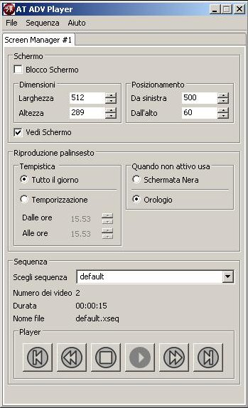

Introduzione
L'AT ADV Player permette di creare sequenze di video multimediali visibili in una porzione del proprio schermo, decidendone la grandezza e la posizione.
La riproduzione di ogni media può essere temporizzata sia nell’intervallo temporale dei giorni e sia nelle ore.
La porzione di video catturata corrisponde alle dimensioni in pixel del display, a partire da un’origine definita attraverso il relativo programma di configurazione.
Il fine con cui l’AT ADV Player è stato concepito è la visualizzazione su maxi schermi delle sequenze create, le quali contengono gli spot pubblicitari realizzati per i propri clienti.
|  | |
| Figura 1 - AT ADV Player | |
Installazione
Il software viene distribuito tramite un pacchetto di installazione.
I prerequisiti per la corretta utilizzazione del software sono l’avere precedentemente installato :
- Java Runtime Enviroment, la cui versione minima è la 1.5.0;
- Apple Quicktime.
Utilizzo
Gestione Visualizzatore
Lanciando il programma ad installazione appena ultimata, viene riprodotta la sequenza di default.
Nella sezione si definisce la dimensione e la posizione della porzione schermo da catturare.
Tramite si decide se la riproduzione deve durare tutto il giorno oppure durante una fascia oraria; in questo caso durante la fase di inattività si può specificare se avere una schermata nera oppure mandare in onda l’orologio.
Nella sezione si può decidere quale
palinsesto riprodurre; ad ogni selezione viene visualizzato il numero
dei video presenti,
la durata totale del palinsesto e il file dove
è contenuto.
Premendo vengono memorizzate tutte le scelte finora effettuate
Gestione Sequenza
Premendo dal menu principale dell’AT ADV Player la voce ; si apre una nuova finestra tramite la quale gestire il palinsesto attuale oppure creare o caricarne uno nuovo.
| Figura 2 - Gestore sequenza |
Sulla sinistra si ha l’elenco delle sequenze caricate in memoria, mentre nel riquadro a destra l’insieme dei media di cui ogni palinsesto è formato.
Tramite i pulsanti a fianco dell’elenco dei media è possibile spostare ognuno di essi nella posizione più gradita del palinsesto.
Tramite il menu se ne può creare una nuova, aprirne una nuova e salvare le modifiche effettuate.
Tramite il menu e avendo selezionato una sequenza, è possibile inserire un nuovo media tra quelli selezionabili dal menù a tendina
| Come dall’esempio qui a fianco, possono venire indicate il periodo e/o le fasce orarie durante le quali visualizzare il media che si sta inserendo | |
| Figura 3 - Inserimento nuovo media |
Dalla voce si elimina un elemento dall’elenco selezionato.